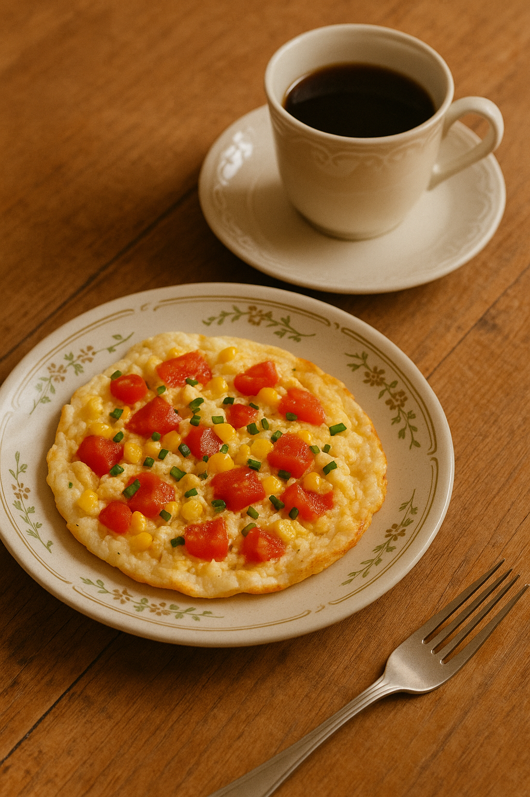
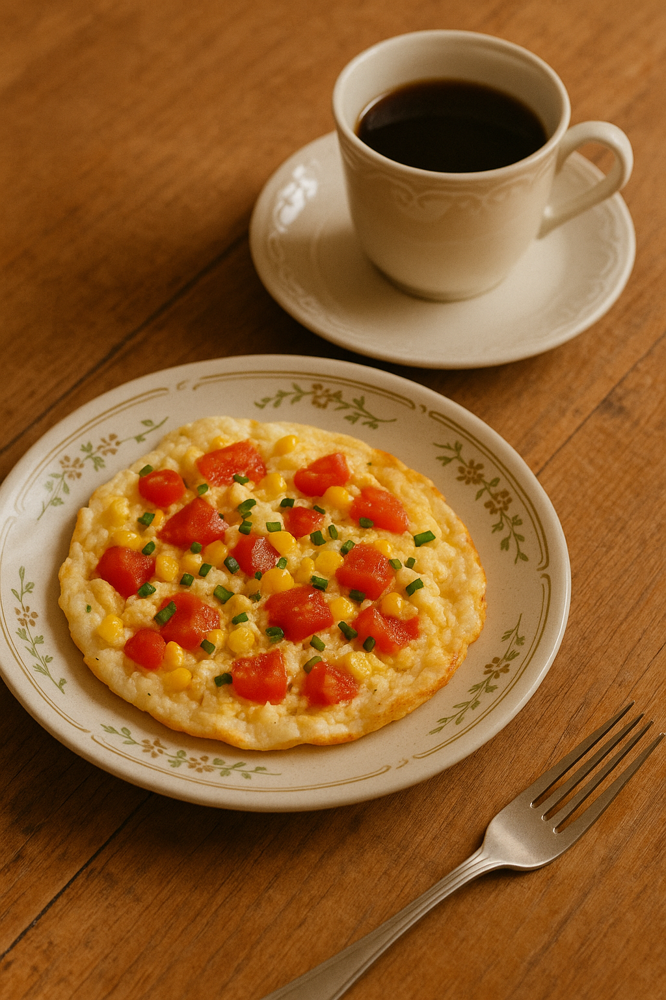

Café da Manhã
Confira deliciosas opções de cafés da manhã saudáveis e fáceis.
Panqueca de Banana sem farinha
4/5 ⭐
Prático e rápido pra quem quer facilidade e tem bastante fome pela manhã.
Ingredientes:
- 1 banana madura
- 1 ovo
- 1 colher de sopa de aveia
- Canela a gosto
Modo de Preparo:
Amasse a banana, misture os ingredientes e leve para a frigideira antiaderente em fogo baixo. Vá colocando pequenas porções na frigideira. Se você não tem restrições com açúcar, pode jogar um pouco de mel! Se quiser mais proteína, faça uma pastinha de whey com leite desnatado ou água e jogue por cima.


Omelete de Claras
5/5 ⭐
Uma opção leve e rica em proteínas para começar o dia.
Ingredientes:
- 4 claras de ovos
- 1 tomate picado
- 1 colher de sopa de cebolinha
- Sal e pimenta a gosto
Modo de Preparo:
Bata as claras em uma tigela, adicione os temperos e misture. Aqueça uma frigideira antiaderente com um fio de óleo ou azeite, despeje a mistura e cozinhe até firmar. Você pode ir mexendo ou pode deixar dourarde um lado, virar e esperar dourar do outro.
 

Overnight Oats
4.5/5 ⭐
Aveia hidratada no iogurte com frutas, prática e nutritiva!
Ingredientes:
- 3 colheres de sopa de aveia
- 1 pote de iogurte natural
- 1 banana picada (ou a fruta que você mais gosta)
- Canela e mel a gosto
Modo de Preparo:
Misture tudo em um pote e deixe na geladeira por 6-8h. Pode fazer de noite pra comer de manhça ou durante o dia para comer de noite.
Crepioca de Frango
4.7/5 ⭐
Rica em proteínas e super fácil de preparar para um café reforçado.
Ingredientes:
- 1 ovo
- 2 colheres de sopa de goma de tapioca
- Frango desfiado temperado (a gosto)
- Orégano ou temperos naturais
Modo de Preparo:
Misture o ovo com a goma de tapioca. Despeje em frigideira antiaderente e adicione o frango por cima. Quando firmar, dobre como panqueca.


Mingau Proteico
5/5 ⭐
Perfeito pra dias frios ou quando bate vontade de aconchego e energia!
Ingredientes:
- 3 colheres de sopa de aveia
- 1 xícara de leite ou bebida vegetal
- 1 scoop de whey protein (baunilha ou chocolate)
- Canela e adoçante a gosto
Modo de Preparo:
Leve a aveia e o leite ao fogo médio até engrossar. Depois que esfriar um pouco, adicione o whey. Misture e finalize com canela.


Pão de Micro-ondas Low Carb
4.8/5 ⭐
Pronto em 2 minutos e perfeito pra acompanhar café ou rechear com ovos!
Ingredientes:
- 1 ovo
- 1 colher de sopa de farelo de aveia ou farinha de amêndoas
- 1 colher de chá de fermento em pó
- Sal e temperos a gosto
Modo de Preparo:
Misture tudo em uma caneca untada e leve ao micro-ondas por 2 minutos. Corte no meio e recheie como preferir.


Torta de Frigideira Low Carb
4.5/5 ⭐
Uma torta rápida e deliciosa para quem busca praticidade.
Ingredientes:
- 2 ovos
- 2 colheres de sopa de farinha de amêndoas
- 1 tomate picado
- Queijo cottage ou ricota a gosto
Modo de Preparo:
Misture os ovos com a farinha de amêndoas. Despeje metade da mistura em uma frigideira antiaderente, adicione o recheio e cubra com o restante da massa. Cozinhe até dourar.